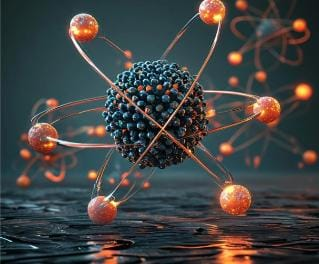
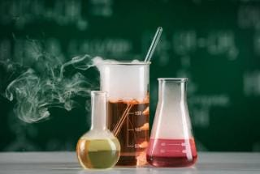
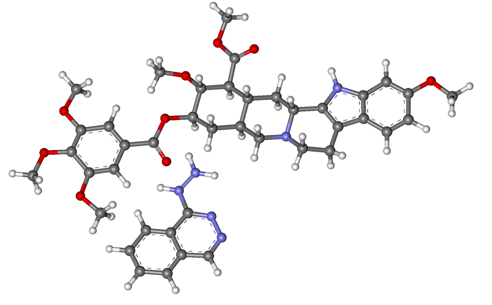

Химия — это наука, изучающая вещества, их свойства, строение и изменения.
Она изучает атомы, молекулы, реакции, а также взаимодействия между различными веществами.
Основы химии
Химия делится на несколько разделов:
Органическая химия: изучает соединения углерода, такие как углеводороды, спирты, кислоты и другие органические соединения.
Неорганическая химия: изучает вещества, не содержащие углерод, включая минералы, металлы, газы и кислотные растворы.
Аналитическая химия: анализирует состав веществ, определяет их компоненты и их концентрации.
Физическая химия: исследует физические свойства веществ и химические реакции на уровне молекул и атомов.
Биохимия: изучает химические процессы, происходящие в живых организмах, включая метаболизм и синтез биомолекул.
Строение атома
Все вещества состоят из атомов. Атом состоит из:
Протонов (положительно заряженные частицы).
Нейтронов (нейтральные частицы).
Электронов (отрицательно заряженные частицы, вращаются вокруг ядра).
Структура атома определяет его химические свойства. Количество протонов в атоме определяет его элемент и его место в периодической таблице.

Периодическая таблица Менделеева
Периодическая таблица — это способ классификации всех известных химических элементов. Она упорядочена по атомным номерам и химическим свойствам элементов.
Каждый элемент в таблице имеет уникальное атомное число и соответствующие ему химические свойства.
Таблица Менделеева помогает понять закономерности поведения элементов и их соединений.
1
2
3
4
5
6
7
8
H
He
Li
Be
B
C
N
O
F
Ne
Na
Mg
Al
Si
P
S
Cl
Ar
K
Ca
Sc
Ti
V
Cr
Mn
Fe
Co
Ni
Cu
Zn
Ga
Ge
As
Se
Br
Kr
Rb
Sr
Y
Zr
Nb
Mo
Tc
Ru
Rh
Pd
Ag
Cd
In
Sn
Sb
Te
I
Xe
Cs
Ba
La
Hf
Ta
W
Re
Os
Ir
Pt
Au
Hg
Tl
Pb
Bi
Po
At
Rn
Fr
Ra
Ac
Химические реакции
Химические реакции — это процессы, в которых вещества (реагенты) превращаются в новые вещества (продукты), изменяя свою структуру и свойства.
Примеры химических реакций:
Окислительно-восстановительные реакции: обмен электронов между веществами, например, ржавление железа.
Кислотно-основные реакции: реакции между кислотами и основаниями с образованием воды и соли, например, нейтрализация уксусной кислоты содой.
Дегидратация: удаление молекулы воды из вещества, например, при получении сахара из крахмала.
Синтез и разложение: соединение или разложение химических веществ на более простые компоненты.

Химия в нашей жизни
Химия играет огромную роль в нашей повседневной жизни. Она присутствует везде — от продуктов питания до лекарств и косметики. Вот несколько примеров:
Продукты питания: Мы сталкиваемся с химическими реакциями при приготовлении пищи. Например, кармелизация сахара при приготовлении сладких блюд.
Медицина: Лекарства, которые мы принимаем, часто являются результатом сложных химических процессов, направленных на лечение заболеваний.
Косметика: Кремы, шампуни и другие косметические средства содержат химические вещества, которые помогают поддерживать здоровье и красоту кожи.
Экология: Химия также помогает в решении экологических проблем, например, в очистке воды и воздуха от загрязняющих веществ.
Атомные и молекулярные силы
Молекулы и атомы связаны между собой силами, которые определяют их свойства:
Ковалентная связь: атомы соединяются, обмениваясь или совместно используя электроны (например, в молекуле воды).
Ионная связь: связь между атомами с противоположными зарядами (например, хлорид натрия).
Металлическая связь: атомы металлов образуют решетку, где электроны свободно перемещаются (например, в медных проводах).
Ван-дер-Ваальсовы силы: слабые силы притяжения, возникающие между молекулами (например, в жидких кристаллах).

Состояния вещества
Вещество может находиться в трех основных состояниях:
Твердое состояние: молекулы расположены близко друг к другу и имеют фиксированное положение. Пример: лед.
Жидкое состояние: молекулы находятся на расстоянии друг от друга и могут двигаться. Пример: вода.
Газообразное состояние: молекулы очень далеко друг от друга и двигаются свободно. Пример: воздух.
Также существуют промежуточные состояния, такие как плазма, которая возникает при очень высоких температурах.
Кислоты, основания и соли
Химические вещества делятся на три основные группы:
Кислоты: вещества, которые могут отдавать протоны (ион водорода, H+) в растворе. Пример: серная кислота (H₂SO₄).
Основания: вещества, которые могут принимать протоны или отдавать гидроксид-ион (OH⁻). Пример: натрий гидроксид (NaOH).
Соли: образуются в результате реакции между кислотой и основанием. Пример: хлорид натрия (NaCl).
Растворы и их свойства
Растворы — это смеси, в которых одно вещество (растворитель) растворяет другое вещество (растворенное вещество).
Концентрация раствора: это количество растворенного вещества в определенном объеме раствора.
Растворимость: способность вещества растворяться в другом веществе при определенных условиях.
Сила раствора: зависит от природы растворенного вещества и растворителя (например, вода — хороший растворитель для соли, но не для масла).
Пример раствора: сахар в воде.
Энергия химических реакций
Химические реакции могут быть экзотермическими или эндотермическими:
Экзотермические реакции: реакции, которые сопровождаются выделением энергии (например, горение угля).
Эндотермические реакции: реакции, которые поглощают энергию из окружающей среды (например, растворение соли в воде).
Энергия реакций влияет на скорость реакции и стабильность получаемых продуктов.
Катализаторы в химии
Катализаторы — это вещества, которые ускоряют химические реакции, не изменяясь сами.
Гомогенные катализаторы: катализаторы, которые находятся в той же фазе, что и реагенты (например, кислоты в реакциях органического синтеза).
Гетерогенные катализаторы: катализаторы, которые находятся в другой фазе, чем реагенты (например, металл в реакции гидрогенизации).
Катализаторы играют важную роль в промышленности и биологических процессах (например, ферменты в организме).
Химия и экология
Химия оказывает огромное влияние на экологические процессы:
Загрязнение окружающей среды: химические вещества, такие как токсичные газы, пластик и тяжелые металлы, могут загрязнять воздух, воду и почву.
Охрана природы: химия помогает разрабатывать методы очистки воды и воздуха, а также восстанавливать загрязненные экосистемы.
Устойчивое развитие: химики разрабатывают экологически чистые технологии и материалы, которые могут минимизировать ущерб природе.
Пример: разложение пластика, альтернативные источники энергии.
Заключение
Химия — это наука, которая охватывает все аспекты нашей жизни, от здоровья до технологий и экологии.
Знания химии открывают путь к будущим инновациям, которые помогут нам решать глобальные проблемы.
Изучая химию, мы учим лучше понимать мир вокруг нас и научиться использовать его ресурсы более эффективно.
Будущее химии
Будущее химии связано с решением глобальных проблем:
Разработка новых источников энергии: создание эффективных и экологичных источников энергии, таких как водородные топливные элементы и солнечные панели.
Исследования в области нанотехнологий: создание материалов с уникальными свойствами, которые могут революционизировать медицину, электронику и другие области.
Экологичные технологии: химия помогает создавать более безопасные для окружающей среды материалы, продукты и процессы.